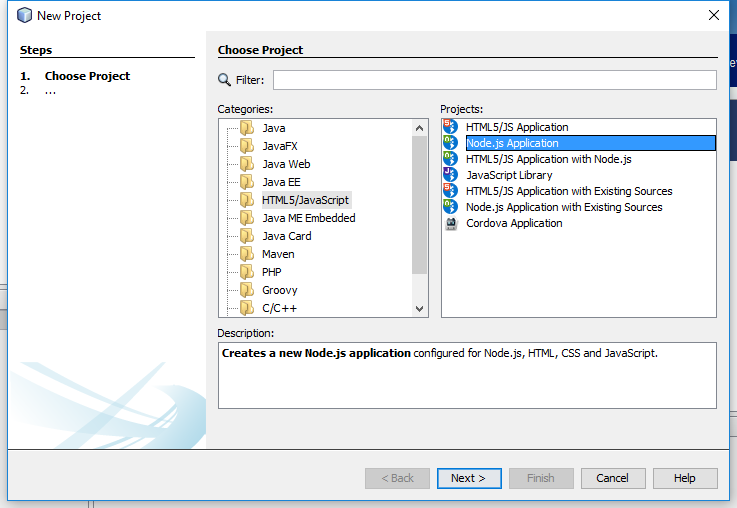
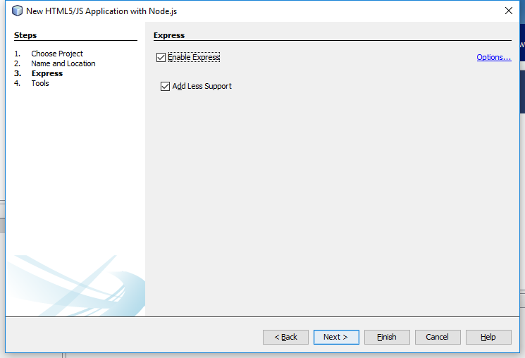
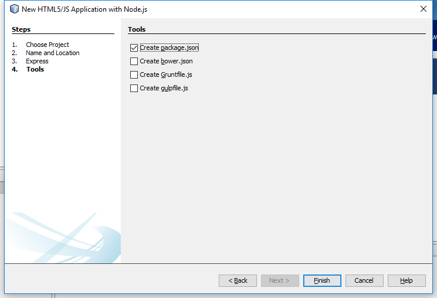

Proyectos con Netbeans
Preparando el IDE
Partimos que ya tenemos instalado Netbeans de temas anteriores y sólo hemos de instalar Node.js para confinuar.
Una vez descargamos Node.js hacemos doble clic e instalamos en Windows o, en Linux, instalamos con el gestor de paquetes correspondiente (YUM, APT, etc.), en Ubuntu sería algo como:
$ sudo apt-get install nodejs
En Windows recordamos que es mucho mejor usar el instalador de su página Web porque añade a la PATH los ejecutables de NodeJS.
Ahora hay que crear un nuevo proyecto File -> New Project -> HTML5/JavaScript -> HTML5/JS Application with Node.js:

Ahora pulsamos en siguiente e introducimos la ruta y nombre de la APP que vamos a crear:

Pulsamos en siguiente y marcamos Express y Less:

Pulsamos en siguiente y seleccionamos sólo "Create package.json". Para poder utilizar las otras herramientas, previamente hemos de haberlas instalado con el gestor de paquetes npm de Node.js.

Preparación del entorno SIN IDE
En el caso que no queramos usar un IDE, también hay disponibles frameworks para preparar todo el "boilerplate" (preparar el entorno y la configuración de la aplicación). Un ejemplo es mean-cli. (CLI viene de Command Line Interface)
Instalación de MEAN CLI
Para instalar mean-cli y crear nuestra primera aplicación full-stack, como usuario administrador, en una terminal tecleamos lo siguiente:
$ npm install -g mean-cli
$ mean init <myApp>
$ cd <myApp>
$ npm installInvocamos NodeJS con un gestor de tareas
MEAN usa Gulp como gestor de tareas. En caso de no tenerlo instalado previamente, deberemos hacerlo con npm -g install gulp
$ gulpAlternativamente, si no usamos gulp podemos usar:
$ node servertras esto, podemos comprobar si funciona abriendo esta URL en el navegador:
http://localhost:3000Obra publicada con Licencia Creative Commons Reconocimiento No comercial Sin obra derivada 4.0